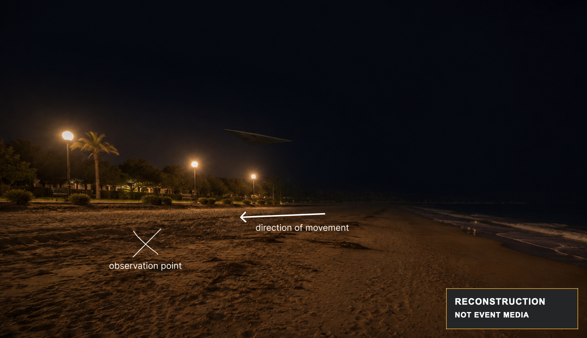
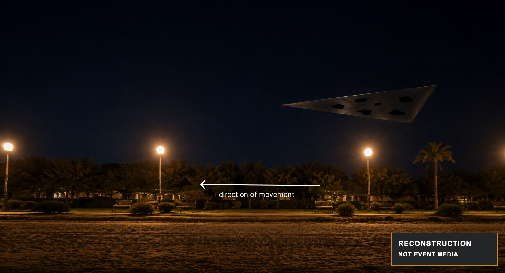
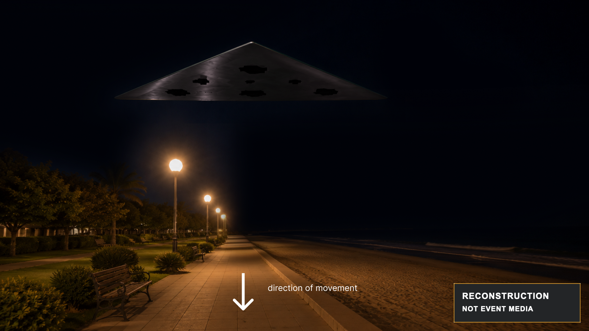
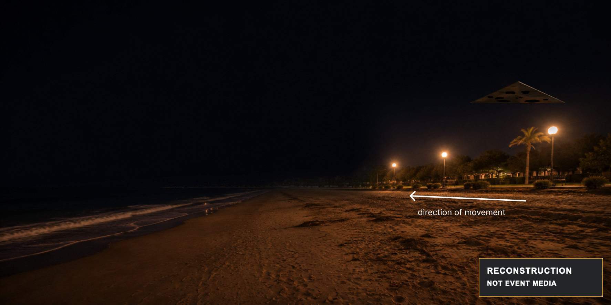
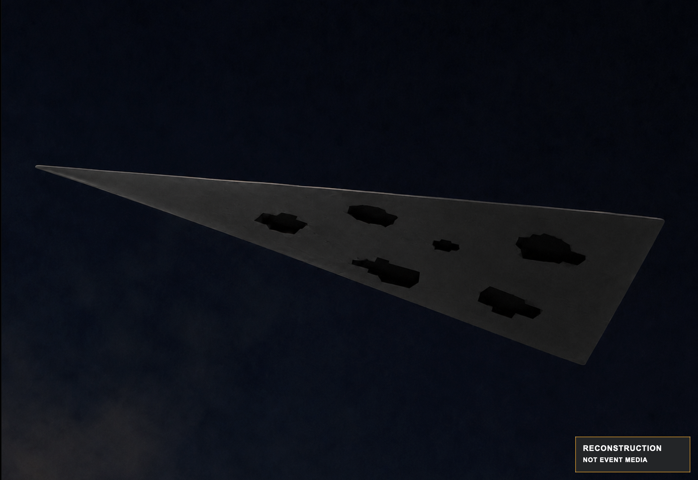

What is missing
No known event photograph or video, independent witness record, or sensor measurement. The exact date, site, and geometry are unknown.
Read the uncertaintiesIn summer 2004, near Antalya, I saw a dark triangular object pass close by. These are reconstructions from my memory. Help me explore what it could have been.
Four later illustrations of the scene. Open a view to look closer.
Reconstructed from memory, not photographed at the time. Shape, scale, lighting, and setting are approximate; these views are not a measured sequence.

Where I remember standing and the direction the form travelled. The location and distances are approximate.

The view from near ground level. Height, apparent size, and position are reconstructed from memory.

A closer interpretation of the dark underside and black regions. Their exact shape, number, and placement are uncertain.

An interpretation at a smaller apparent scale. I remember losing sight of the form as it left the light.
Antalya coast, Turkey · Summer 2004
Exact date and site unknown
I remember a dark, matte triangular form moving slowly along the coast, close by and low above the ground or water. The walkway lamps lit its underside. Several irregular areas looked completely black.
I noticed no obvious sound or visible means of propulsion. After the lamp row ended, I could make out a faint contour for about a second before it became too dark to see.
I did not photograph or film it. I still do not know what it was. I use “UFO” to mean unidentified, without claiming an extraterrestrial origin.
Recalled ranges, not measurements.

Only the broad triangular outline and the presence of irregular black regions should be read from this sketch. I later estimated roughly 5–7 regions, but their exact count, shape, size, orientation, and placement are uncertain.
The object is still unidentified. The record contains my recollection, later illustrations, calculations, and notes comparing possible explanations.
No known event photograph or video, independent witness record, or sensor measurement. The exact date, site, and geometry are unknown.
Read the uncertaintiesThe estimated path and duration give a conditional speed range. Changing either estimate changes the result; the arithmetic cannot confirm the memory.
See the speed calculationPerception or scale errors and a misidentified ordinary object remain possible. Other comparisons also depend on uncertain size, distance, and conditions.
Read the comparison notesMy recollections, later estimates, calculations, and proposed explanations are kept separate. Corrections stay visible, and each explanation must state its assumptions and what could count against it.
I am both the witness and the current curator. I can say whether wording matches my memory; that does not independently verify the event.
Start with one candidate that existed by summer 2004. Share a source, explain one detail it could account for, and say what does not fit. You do not need a complete theory to join the discussion.
Discuss a possible explanationOpens Discord. An account is needed to post. Start with “My candidate is … because …; what does not fit is …”.
Discord invitation unavailable. You can still use the research tasks below.
Use the stated path and duration ranges. Show the arithmetic and how a different estimate changes the result.
Find a dated source for a real candidate. Compare its silhouette with the written account, and name one mismatch.
Spot an unclear sentence, missing source, or broken link? Point to it and suggest a specific correction.
Discussion and GitHub are public. Keep personal witness reports, identifying details, and sensitive media in the private form.
The full account, calculations, sources, and correction history are open on GitHub. You can read them without signing in.
GitHub project temporarily unavailable.
Challenge claims, not people. Support factual claims with sources, mark estimates and generated material clearly, and keep personal reports out of public channels. Discussion enters the research record only after review.
Read the code of conduct